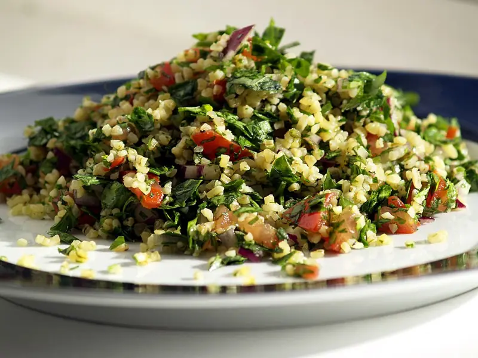

Фото: cyclonebill, CC BY-SA 2.0

Табуле
Ливанский салат из петрушки, булгура и помидоров с лимоном
30 мин4 порц.204 ккал на порциюБ 4 · Ж 13 · У 15Средиземноморская кухня
Продукты на 4 порц.
- Булгур4 ст. л.
- Вода0,5 стак.
- Петрушка3 пучок
- Помидоры3 шт
- Огурцы по желанию1 шт
- Зелёный лук0,5 пучок
- Лимон1 шт
- Оливковое масло3 ст. л.
- Соль0,5 ч. л.
- Перец чёрный молотый1 щеп.
Как готовить
- Залейте мелкий булгур кипятком, накройте и оставьте на 15-20 минут, пока не набухнет. Остатки воды слейте.
- Петрушку вымойте, тщательно обсушите и очень мелко порубите ножом вместе с тонкими стеблями.
- Помидоры и огурец нарежьте мелким кубиком, лук колечками.
- Смешайте сок лимона, оливковое масло, соль и перец.
- Соедините булгур, зелень и овощи, полейте заправкой и перемешайте. Дайте постоять 10 минут.
Совет. В табуле главная петрушка, булгура должно быть мало. Мокрая зелень сделает салат водянистым, поэтому сушите её полотенцем.